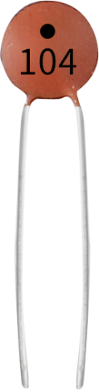
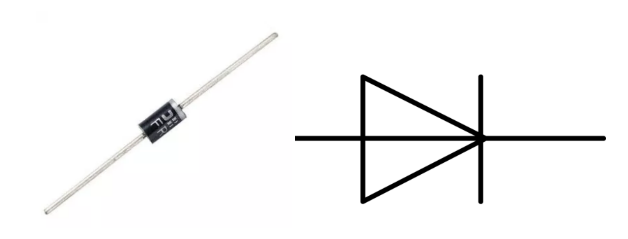

2.1 Common Component¶
Overview¶
This lesson introduces some common components, including breadboard, jump wires, resistor, capacitor, transistor, diode, Prototype Shield and so on.
Breadboard¶
A breadboard is a construction base for prototyping of electronics. It is used to build and test circuits quickly before finalizing any circuit design. And it has many holes into which components like ICs and resistors as well as jumper wires mentioned above can be inserted. The breadboard allows you to easily plug in and remove components. So if there are going to be many changes or if you just want to make a circuit quickly, it will be much quicker than soldering up your circuit. Therefore in lots of experiments, it is often used as a hub to connect two or more devices.

This is the internal structure of a full+ breadboard. Although there are holes on the breadboard, internally some of them are connected with metal strips. Those holes are to insert pins of devices or wires. There are four long metal strips on the long sides; the blue and red lines are marked just for clear observation. But you can take the blue line as the GND and red one as VCC for convenience. Every five holes in the middle are vertically connected with metal trips internally which don’t connect with each other. You can connect them horizontally with wires or components. A groove is made in the middle on the breadboard for IC chips.

Jumper Wires¶
Wires that connect two terminals are called jumper wires. There are various kinds of jumper wires. Here we focus on those used in breadboard. Among others, they are used to transfer electrical signals from anywhere on the breadboard to the input/output pins of a microcontroller.
Jump wires are fitted by inserting their “end connectors” into the slots provided in the breadboard, beneath whose surface there are a few sets of parallel plates that connect the slots in groups of rows or columns depending on the area. The “end connectors” are inserted into the breadboard, without soldering, in the particular slots that need to be connected in the specific prototype.
There are three types of jumper wire: Female-to-Female, Male-to-Male, and Male-to-Female. The reason we call it Male-to-Female is because it has the outstanding tip in one end as well as a sunk female end. Male-to-Male means both side are male and Female-to-Female means both ends are female.

More than one type of them may be used in a project. The color of the jump wires is different but it doesn’t mean their function is different accordingly; it’s just designed so to better identify the connection between each circuit.
Resistor¶
Resistor is an electronic element that can limit the branch current. A fixed resistor is one whose resistance cannot be changed, when that of a potentiometer or variable resistor can be adjusted.
The resistors in this kit are fixed ones. It is essential in the circuit to protect the connected components. The following pictures show a real 220Ω resistor and two generally used circuit symbols for resistor. Ω is the unit of resistance and the larger includes KΩ, MΩ, etc. Their relationship can be shown as follows: 1 MΩ=1000 KΩ, 1 KΩ = 1000 Ω, which means 1 MΩ = 1000,000 Ω = 10^6 Ω. Normally, the resistance is marked on it. So if you see these symbols in a circuit, it stands for a resistor.


The resistance can be marked directly, in color code, and by character. The resistors offered in this kit are marked by different colors. Namely, the bands on the resistor indicate the resistance.
When using a resistor, we need to know its resistance first. Here are two methods: you can observe the bands on the resistor, or use a multimeter to measure the resistance. You are recommended to use the first method as it is more convenient and faster. If you are not sure about the value, use the multimeter.
As shown in the card, each color stands for a number.
Capacitor¶
The capacitor is a component that has the capacity to store energy in the form of electrical charge or to produce a potential difference (Static Voltage) between its plates, much like a small rechargeable battery.
Standard Units of Capacitance
Microfarad (μF) 1μF = 1/1,000,000 = 0.000001 = \(10^{- 6}\) F
Nanofarad (nF) 1nF = 1/1,000,000,000 = 0.000000001 = \(10^{- 9}\)F
Picofarad (pF) 1pF = 1/1,000,000,000,000 = 0.000000000001 = \(10^{- 12}\)F
Here we shown 104 capacitor(10 x 104PF). Just like the ring of resistors, the numbers on the capacitors help to read the values once assembled onto the board. The first two digits represent the value and the last digit of the number means the multiplier. Thus 104 represents a power of 10 x 10 to 4 (in pF) equal to 100 nF.
Transistor¶

Transistor is a semiconductor device that controls current by current. It functions by amplifying weak signal to larger amplitude signal and is also used for non-contact switch. A transistor is a three-layer structure composed of P-type and N-type semiconductors. They form the three regions internally. The thinner in the middle is the base region; the other two are both N-type or P-type ones – the smaller region with intense majority carriers is the emitter region, when the other one is the collector region. This composition enables the transistor to be an amplifier.

From these three regions, three poles are generated respectively, which are base (b), emitter (e), and collector (c). They form two P-N junctions, namely, the emitter junction and collection junction. The direction of the arrow in the transistor circuit symbol indicates that of the emitter junction. Based on the semiconductor type, transistors can be divided into two groups, the NPN and PNP ones. From the abbreviation, we can tell that the former is made of two N-type semiconductors and one P-type and that the latter is the opposite. See the figure below.
When a High level signal goes through an NPN transistor, it is energized. But a PNP one needs a Low level signal to manage it.
Diode¶
A diode is a two-terminal component in electronics with a unidirectional flow of current. It offers low resistance in the direction of current flow and offers high resistance in the opposite direction. Diodes are mostly used to prevent damage to components, especially due to electromotive force in circuits which are usually polarized.
The two terminals of a diode are polarized, with the positive end called anode and the negative end called cathode. The cathode is usually made of silver or has a color band. Controlling the direction of current flow is one of the key features of diodes — the current in a diode flows from anode to cathode. The behavior of a diode is similar to the behavior of a check valve. One of the most important characteristics of a diode is the non-linear current voltage. If higher voltage is connected to the anode, then current flows from anode to cathode, and the process is known as forward bias. However, if the higher voltage is connected to the cathode, then the diode does not conduct electricity, and the process is called reverse bias.
Prototype Shield¶

The Prototype Shield makes it easy for you to design custom circuits. You can solder parts to the prototyping area to create your project, or use it with a Tiny breadboard to quickly test circuit ideas without having to solder. It’s got extra connections for all of the Arduino I/O pins, and it’s got space to mount through-hole and surface mount integrated circuits. It’s a convenient way to make your custom circuit and Arduino into a single module.
Specifications
It can be overlayed on the Sunfounder Mega2560 board directly. A Tiny breadboard is provided, which you can use to do some simple experiments.
Provide a footprint for SOP28.
It’s got extra connections for all of the Arduino I/O pins
We offer you pin22-pin53 bonding pad and you can use it to weld the component directly.